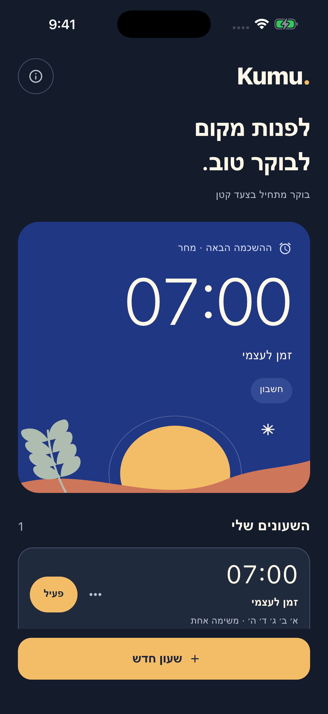
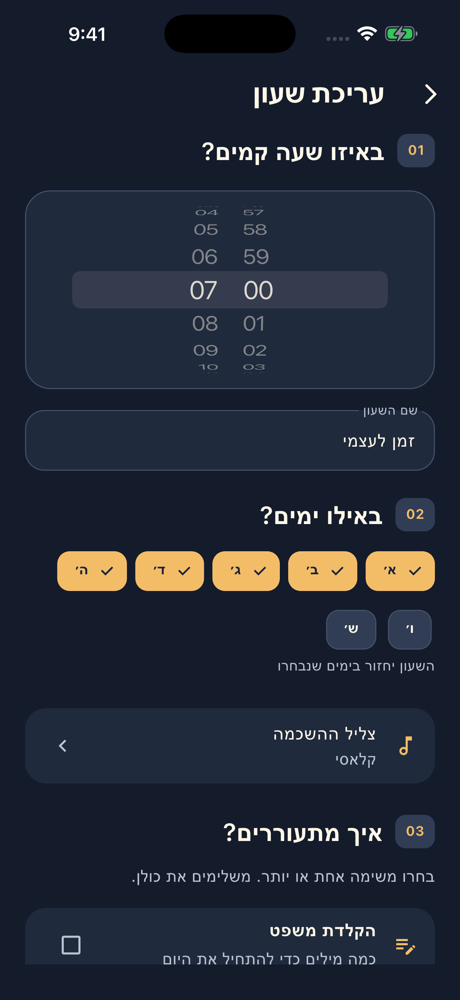
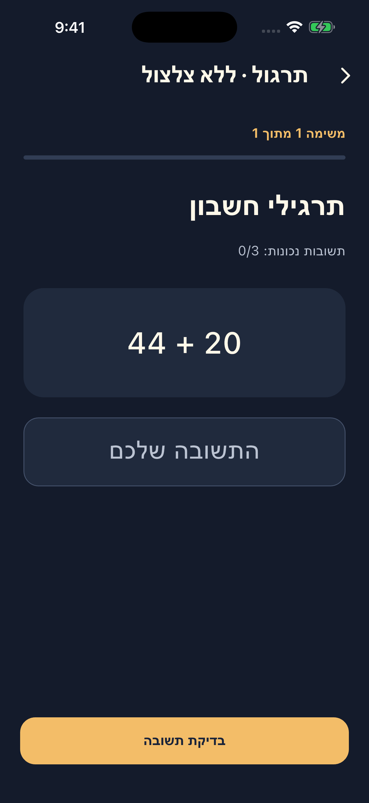

בוחרים מתי
שעה אחת, הימים שלכם ושמונה צלילים לבחירה. הכל במקום אחד.
בוקר מתחיל בצעד קטן
שעון מעורר עם משימות קטנות שעוזרות להתחיל לזוז. בחרו את השעה, את הצליל ואת הצעד הראשון של הבוקר שלכם.
זמין עכשיו ב־App Storeלאייפון · iOS 26 ומעלה

01 / הדרך לבוקר
לא כל בוקר נראה אותו דבר. גם הדרך שלכם לקום לא חייבת להיות זהה.
שעה אחת, הימים שלכם ושמונה צלילים לבחירה. הכל במקום אחד.
משפט משלכם, כמה תרגילי חשבון או משימת צילום ניסיונית. בחרו משימה אחת או שלבו כמה.
משלימים את המשימות באפליקציה ומסיימים את ההשכמה ואת גיבויי הצלצול.
02 / מבט מבפנים
הגדרות פשוטות. משימות ברורות. מקום לבוקר שלכם.


03 / פרטיות, בפשטות
בלי חשבון, בלי פרסומות ובלי כלי מעקב. צילום המשימה מעובד באייפון, ואינו נשמר או נשלח למפתח.
למדיניות הפרטיות ↗להשכמות חשובות השתמשו גם בגיבוי עצמאי. פעולת השעון תלויה במכשיר ובהגדרותיו, ואין הבטחה להתעוררות. מידע על שימוש בטוח
כן. iOS מאפשרת עצירה באמצעות פקדי המערכת. Kumu. מתזמנת גיבויים בכל דקה ל־30 דקות מראש; החלון מתחדש בזמן ביצוע המשימות. כשהאפליקציה סגורה מעבר לחלון הזה, רצף הגיבויים עלול להסתיים.
מצלמים אסלה במצלמה, והזיהוי נעשה במכשיר. הזיהוי ניסיוני: אחרי שלושה כישלונות, או אם המצלמה או הזיהוי אינם זמינים, אפשר לעבור לחמישה תרגילי חשבון חלופיים.
Kumu. מיועדת לאייפון עם iOS 26 ומעלה. הממשק בעברית כשהשפה הראשית היא עברית, ובאנגלית בכל שפה ראשית אחרת.
Kumu. זמינה עכשיו ב־App Store. לעמוד האפליקציה בחנות ↗
KUMU. / GOOD MORNING, AGAIN.
הצעד הראשון לבוקר שלכם. עכשיו באייפון.
הבוקר שלכם מתחיל כאןלהורדה ב־App Store